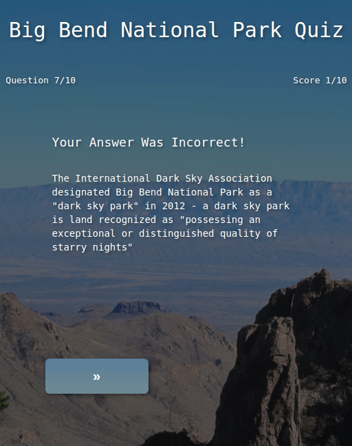

PROJECTS

PROJECT: Quiz App
DESCRIPTION: A quiz app about Big Bend National Park
HTML5/CSS3/jQuery
LIVE |
REPO

PROJECT: Composition CSS Grid
DESCRIPTION: A recreation of Piet Mondrian's 'composition-c' using CSS grid
HTML5/CSS3
LIVE |
REPO